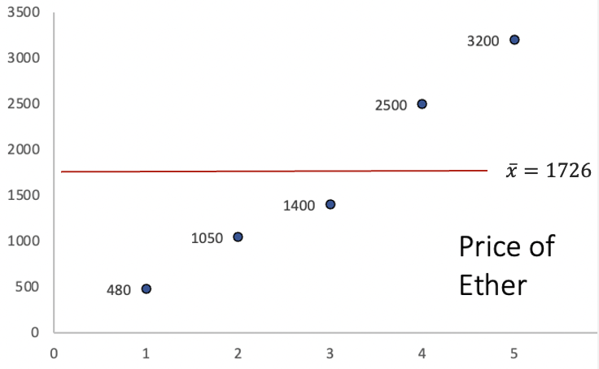
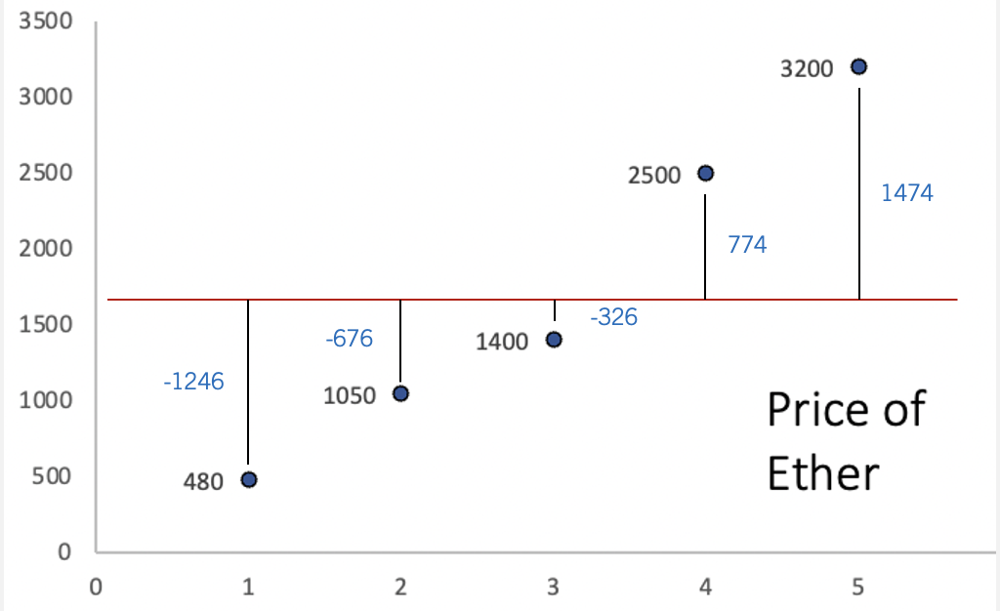
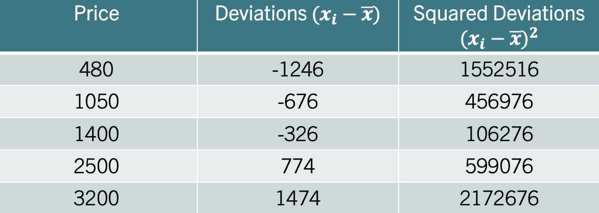
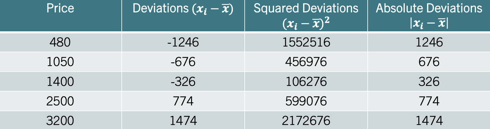
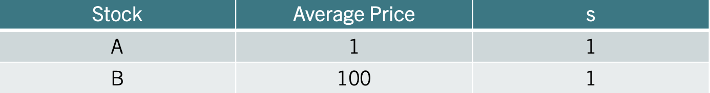
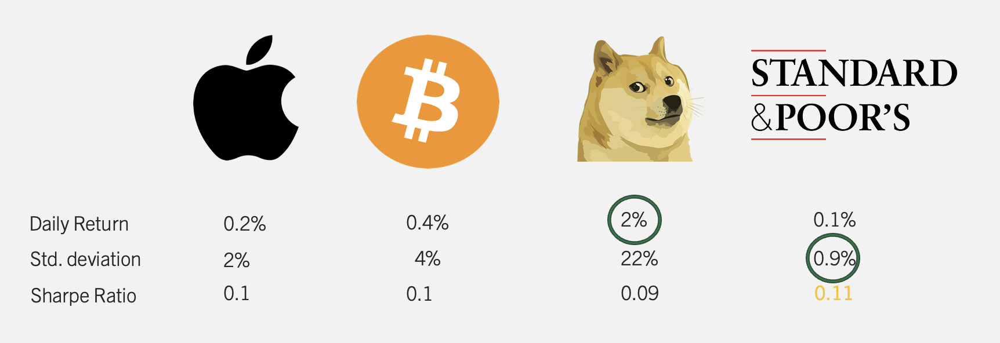

4 Descriptive Stats IV
Measures of dispersion provide insights into how much the values in a data set deviate from the central tendency. In a business context, understanding variability is essential for assessing risk, as it helps decision-makers anticipate fluctuations in revenue, costs, and market conditions. Below, we explore the main statistics that help us quantify variability and use them to make better business decisions.
4.1 Sample Vs. Population Statistics
In this book you will find formulas for calculating sample statistics and population parameters. In general, you will use population formulas when you have data for the entire group you care about or when you are working with a theoretical distribution and the parameter is known; population formulas use \(N\) in denominators and estimate parameters. Use sample formulas when your data are a subset drawn from a larger population and you want unbiased estimators of the population parameters; sample formulas use \(n\) and the degrees of freedom correction. In practice most empirical work uses sample formulas because we rarely observe entire populations; below you will see both population and sample versions so you can choose the correct one depending on whether your data represent the full population or a sample.
4.2 The Range
This is the simplest measure of dispersion, defined as the difference between the largest and smallest values in a variable. While straightforward, the range only accounts for the extremes and does not reflect the variability within the variable. The range is calculated by:
\[Range=Maximum-Minimum\]
Ex: Consider the data \(x=\{480, 1050, 1400, 2500, 3200\}\). The range is given by \(Range=3200-480=2720\).
4.3 The Variance
The variance gives us a more comprehensive look at dispersion by considering how each data point deviates from the mean. It summarizes the squared deviations from the mean by finding their average.The population parameter is given by:
\[\sigma^2= \frac{\sum (x_i-\mu)^2}{N}\]
while the sample statistic is
\[s^2=\frac{\sum (x_i-\bar{x})^2}{n-1}\]
Example: Let’s consider a sample of the price of Ether (a famous cryptocurrency). Below is a graph of the prices:
The y axis represents the price, while the x axis represents the period of time. The red line is the average price of Ether. The way the variance calculates dispersion, is by first finding the distance between each point and the average. The image below illustrates these distances:

Ideally, our measure of dispersion would simply average the distances from each data point to the mean, giving us a clear indication of how much the data varies around this central point. Since the mean is a measure that balances the distances from the mean, the sum of all deviations is equal to zero. This “balancing” effect is visually apparent in the graph, where positive deviations are exactly offset by negative ones.
To address this issue, the variance squares each deviation from the mean before finding their average. This squaring eliminates negative values, ensuring a non-zero measure of spread. The table below illustrates these calculations:

The second column shows the deviations from the mean. You can convince yourself that these add up to zero. The third column squares the deviations. The sample variance, averages the numbers in the third column using the degrees of freedom (\(n-1\)). The result is \(s^2=1221880\), which means that the price of Ether varies on average \(1221880\) squared deviations from the mean. The result by itself is not very intuitive as it is measured in squared dollars. We can, however, compare the variances from different variables to assess which variable has the most dispersion.
4.4 The Standard Deviation
The standard deviation is derived by taking the square root of the variance. Remember, the variance employs squared deviations to eliminate negative values and calculate spread. By taking the square root, the standard deviation reverts the measure of dispersion back to the original units of the variable. This transformation makes the standard deviation more intuitive; it directly quantifies how much each data point deviates from the mean in the same units as the variable itself. Consequently, the standard deviation is a clear and intuitive measure of variability.
To find the standard deviation, take the square root of the variance. For the population parameter use: \[\sigma=\sqrt{\sigma^2}\]
For the sample standard deviation use: \[s=\sqrt{s^2}\]
Ex: Consider once more the price of Ether. That is. \(x=\{480, 1050, 1400, 2500, 3200\}\). In the previous section we found that the variance \(s^2=1221880\). Using the square root we find that \(s=\sqrt{1221880}=1105.387\). If the price of Ether is in dollars, then, the price varies from the mean 1105.39 dollars on average.
4.5 Mean Absolute Deviation
Another measure of data variability is the Mean Absolute Deviation (MAD), which calculates variability using absolute deviations from the mean. This approach not only keeps the measure in the same units as the data but also makes it less sensitive to large deviations. Practically, the Mean Absolute Deviation measures the average deviation from the mean, by using absolute deviations. It is calculated by:
\[MAD=\frac{\sum |x_i-\mu|}{N}\] where the | | operator indicates absolute value. You can estimates the mad for a sample with:
\[mad=\frac{\sum |x_i-\bar{x}|}{n}\]
Example: Let’s consider once more the price of Ether. Recall, that if we calculate the deviations from the mean we obtain the second column in the table below:

For the MAD, focus on the fourth column which lists the absolute deviations from the mean. Averaging these gives us the Mean Absolute Deviation (MAD), which equals \(mad=899.2\). This result states that, on average, each data point is roughly \(900\) dollars away from the mean. Note that the standard deviation is higher (\(988.73\)) since the squaring of deviations disproportionately amplifies larger ones, pushing the standard deviation above the MAD.
4.6 Coefficient of Variation
The Coefficient of Variation simplifies comparisons of variability across variables with different units or scales, by dividing the standard deviation by the mean. It is calculated by:
\[CV=\frac{s}{\bar{x}}\]
Example: Consider the table below, that shows information on two different stocks:

The third column shows the standard deviation of each stock. One could conclude that both stocks vary the same as they have the same standard deviation of one. Recall that the coefficient of variation considers the variable’s scale by incorporating the mean into its calculation. Since one stock is centered around 1 dollar and the other around 100 dollars (second column), it is clear that they do not vary similarly percentage-wise. Stock A varies 100% from the mean, whereas Stock B only varies 1%. Hence, the coefficient of variation would identify Stock A as the more variable stock.
4.7 The Sharpe Ratio
The Sharpe Ratio measures how much excess return an investor receives for the extra volatility (risk) taken on beyond the risk-free rate. It essentially uses the same principle of normalization as the CV but adds the dimension of risk-adjusted performance. If the CV tells you the variability of returns in relation to their mean, the Sharpe Ratio tells you if that variability is worth it by comparing it against what you could safely earn without risk. In essence, while the CV highlights variability, the Sharpe Ratio motivates investment choices by rewarding higher returns per unit of risk taken.
In sum, the Sharpe ratio quantifies the excess return of an investment over the risk free return. It is calculated by:
\[\frac{\bar{R_p}-R_f}{s}\] where \(\bar{R_p}\) is the mean return of the portfolio, \(R_f\) is the risk free return, and \(s\) is the standard deviation.
Example: Consider the table below that includes a collection of investments.

The table shows four investments (Apple, Bitcoin, Shiba, and S&P). Just looking at the daily return, it is clear that Shiba provides the best returns. However, the cost for that high return is reflected in variability (22% for Shiba). The S&P is clearly the safest investment with a standard deviation of only 0.9%. The Sharpe Ratio, marries these two metrics showing the return per unit of risk taken over the free rate. If we assume a 0% risk free rate, the investment with the highest Sharpe Ratio is the S&P at 0.11.
4.8 Measures of Dispersion in R
Let’s use some stock returns to explore R functions that allow us to calculate measures of dispersion. You can run the following command to get the data into R:
library(tidyverse)
returns<-read_csv("https://jagelves.github.io/Data/returns.csv")Use the glimpse() function to view the data:
glimpse(returns)Rows: 1,182
Columns: 3
$ date <chr> "1/3/20", "1/6/20", "1/7/20", "1/8/20", "1/9/20", "1/10/20", "1…
$ Stock <chr> "AAPL", "AAPL", "AAPL", "AAPL", "AAPL", "AAPL", "AAPL", "AAPL",…
$ Return <dbl> -0.009769540, 0.007936685, -0.004714194, 0.015958317, 0.0210183…It seems like the data is stock returns for different companies. We can start by finding the average return of each stock. To do this, let’s use the group_by() and summarise() functions.
returns %>% group_by(Stock) %>%
summarise(Mean=mean(Return))# A tibble: 3 × 2
Stock Mean
<chr> <dbl>
1 AAPL 0.00173
2 SPY 0.000828
3 TSLA 0.00511 The group_by() function makes a group out of every unique entry in the Stock variable. Since, there are three unique entries (AAPL, SPY and TSLA), it created three groups. The summarise() function allows us to combine (or use) all of the entries of a particular stock to find a summary statistic. Since we specified mean(), the command returns the mean of the particular stock returns. It seems like TSLA has the highest mean return at 0.5%.
We can keep adding to the table by specifying other measures. To calculate the variance we can use the var() function, for the standard deviation we can use the sd() function, and for the coefficient of variation we can find the ratio between the standard deviation and the mean.
returns %>% group_by(Stock) %>%
summarise(Mean=mean(Return),
Variance=var(Return),
SD=sd(Return),
CV=SD/Mean*100)# A tibble: 3 × 5
Stock Mean Variance SD CV
<chr> <dbl> <dbl> <dbl> <dbl>
1 AAPL 0.00173 0.000659 0.0257 1483.
2 SPY 0.000828 0.000313 0.0177 2138.
3 TSLA 0.00511 0.00252 0.0502 983.TSLA seems to have the highest variation when following the standard deviation. However, if we look at the variation as a percentage of the mean, SPY seems to have the highest variation for the period considered. In the table below we once more use the group_by() and summarise() functions to calculate the other measures of dispersion.
returns %>% group_by(Stock) %>%
summarise(Range=diff(range(Return)),
MAD=mean(abs(Return-mean(Return))),
Sharpe=(mean(Return)-0.0001)/sd(Return))# A tibble: 3 × 4
Stock Range MAD Sharpe
<chr> <dbl> <dbl> <dbl>
1 AAPL 0.251 0.0179 0.0635
2 SPY 0.203 0.0107 0.0411
3 TSLA 0.418 0.0354 0.0998In this second table the range is calculated by finding the difference between the minimum and the maximum. We can retrieve the minimum and the maximum by using the range() function. The diff() function finds the difference (or range) between these two numbers. The MAD is calculated straight from the formula. Mainly, finding the absolute deviations from the mean and the averaging them out. Lastly, the Sharpe ratio assumes a risk free daily rate of 0.01%. Once again, TSLA seems like the investment that yields the highest return despite its higher variability.
Below is a list of the functions used:
The
range()function returns the maximum and minimum of a vector of values.The
diff()function finds the first difference of a vector. Position 2 minus position 1, position 3 minus position 2, position 4 minus position 3, etc.The
var()function calculates the sample variance for a vector of values. To calculate the population variance, adjust the result by a factor of \((n-1)/n\).The
sd()function calculates the sample standard deviation.
4.9 Exercises
The following exercises will help you practice the measures of dispersion. In particular, the exercises work on:
Calculating the range, MAD, variance, and the standard deviation.
Using R to calculate measures of dispersion.
Calculating and using the Sharpe ratio to select investments.
Answers are provided below. Try not to peak until you have a formulated your own answer and double checked your work for any mistakes.
Exercise 1
For the following exercises, make your calculations by hand and verify results using R functions when possible. Make sure to calculate the deviations from the mean.
Use the following observations to calculate the Range, MAD, Variance and Standard Deviation. Assume that the data below is the entire population.
70 68 4 98
Answer
The mean is \(60\), the Range is \(94\), the MAD is \(28\), the variance is \(1186\) and the variance is \(34.44\).
Start by creating a vector to hold the values:
Ex1<-c(70,68,4,98)The range can be calculated by using the range() and diff() functions in R.
(Range<-diff(range(Ex1)))[1] 94Next, we can create a table by hand that captures the deviations from the mean. Let’s calculate the mean first:
(Average1<-mean(Ex1))[1] 60Now we can use the mean to fill out a table of deviations:
| \(x_{i}\) | \(x_{i}-\bar{x}\) | \((x_{i}-\bar{x})^2\) | \(|x_{i}-\bar{x}|\) |
|---|---|---|---|
| 70 | 10 | 100 | 10 |
| 68 | 8 | 64 | 8 |
| 4 | -56 | 3136 | 56 |
| 98 | 38 | 1444 | 38 |
The variance averages out the squared deviations \((x_{i}-\bar{x})^2\), the MAD averages out the absolute deviations \(|x_{i}-\bar{x}|\), and the standard deviation is the square root of the variance.
Let’s verify the variance in R:
SquaredDeviations1<-(Ex1-Average1)^2
AverageDeviations1<-mean(SquaredDeviations1)
var(Ex1)*3/4[1] 1186Note that R calculates the sample variance. Hence, we must multiply the result by \(3/4\) to get the population variance. The standard deviation is just the square root of the variance:
sqrt(AverageDeviations1)[1] 34.43835Lastly, the MAD is calculated by averaging the absolute deviations \(|x_{i}-\bar{x}|\).
AbsoluteDeviations1<-abs(Ex1-Average1)
mean(AbsoluteDeviations1)[1] 28Use the following observations to calculate the Range, MAD, Variance and Standard Deviation. Assume that the data below is a sample from the population.
-4 0 -6 1 -3 0
Answer
The mean is \(-2\), Range is \(7\), the MAD is \(2.33\), the variance is \(7.6\) and the standard deviation is \(2.76\).
Here is the table of deviations from the mean:
| \(x_{i}\) | \(x_{i}-\bar{x}\) | \((x_{i}-\bar{x})^2\) | \(|x_{i}-\bar{x}|\) |
|---|---|---|---|
| -4 | -2 | 4 | 2 |
| 0 | 2 | 4 | 2 |
| -6 | -4 | 16 | 4 |
| 1 | 3 | 9 | 3 |
| -3 | -1 | 1 | 1 |
| 0 | 2 | 4 | 2 |
We can check the results in R. Let’s start with the variance:
Ex2<-c(-4,0,-6,1,-3,0)
var(Ex2)[1] 7.6The standard deviation can be found with the sd() function:
sd(Ex2)[1] 2.75681The MAD is given by:
(MAD<-mean(abs(Ex2-mean(Ex2))))[1] 2.333333Lastly, the range:
diff(range(Ex2))[1] 7Exercise 2
You will need the Stocks data set to answer this question. You can find this data at https://jagelves.github.io/Data/Stocks.csv The data is a sample of daily stock prices for ticker symbols TSLA (Tesla), VTI (S&P 500) and GBTC (Bitcoin).
- Calculate the standard deviations for each stock. Which stock had the lowest standard deviation?
Answer
For the sample taken, GBTC has the less variation. The standard deviation of GBTC is \(9.43\), which is less than \(16.57\) for VTI or \(50.38\) for TSLA.
Start by loading the data set from the website. Since the file is in csv format, we will use the read.csv() function.
StockPrices<-read.csv("https://jagelves.github.io/Data/Stocks.csv")Let’s start with the standard deviation of the Tesla stock. The standard deviation is given by:
sd(StockPrices$TSLA)[1] 50.38092Next, let’s find the standard deviation for the S&P 500 or VTI. The standard deviation is given by:
sd(StockPrices$VTI)[1] 16.5731Finally, let’s calculate the standard deviation for GBTC or Bitcoin.
sd(StockPrices$GBTC)[1] 9.434213- Calculate the MAD. Does your answer in 1. remain the same?
Answer
The answer is the same, since the MAD for GBTC is \(8.46\) which is lower than \(14.27\) for VTI or \(41.67\) for TSLA.
To calculate the MAD for TSLA we can use the following command:
(MADTSLA<-mean(abs(StockPrices$TSLA-mean(StockPrices$TSLA))))[1] 41.67163The MAD for VTI is:
(MADVTI<-mean(abs(StockPrices$VTI-mean(StockPrices$VTI))))[1] 14.27169The MAD for GBTC is:
(MADGBTC<-mean(abs(StockPrices$GBTC-mean(StockPrices$GBTC))))[1] 8.458029- Finally, calculate the coefficient of variation. Any changes to your conclusions?
Answer
By considering the magnitudes of the stock prices, it seems like VTI is the less volatile stock. VTI has a CV of \(0.08\) which is lower than \(0.44\) for GBTC or \(0.18\) for TSLA. In fact, by CV Bitcoin seems to be the most risky asset.
The coefficients of variations are as follows. For TSLA the CV is:
(CVTSLA<-sd(StockPrices$TSLA)/mean(StockPrices$TSLA))[1] 0.1793755For VTI the CV is:
(CVVTI<-sd(StockPrices$VTI)/mean(StockPrices$VTI))[1] 0.07970004For GBTC we get:
(CVGBTC<-sd(StockPrices$GBTC)/mean(StockPrices$GBTC))[1] 0.4442497Exercise 3
Install the ISLR2 package. You will need the Portfolio data set to answer this question. The data has 100 records of the returns of two stocks.
- Calculate the mean and standard deviation for each stock. Which investment has higher returns on average? Which investment is safest as measured by the standard deviation?
Answer
The best performing stock on average is stock X. It has an average return of \(-0.078\)% vs. \(0.097\)% for stock Y. The safest stock is stock X as well, since the standard deviation is \(1.062\) percentage points vs. \(1.14\) percentage points for stock Y.
Start by loading the ISLR2 package:
library(ISLR2)Next, calculate the mean for stock X:
mean(Portfolio$X)[1] -0.07713211and stock Y.
mean(Portfolio$Y)[1] -0.09694472Then, calculate the standard deviation for stock X
sd(Portfolio$X)[1] 1.062376and stock Y.
sd(Portfolio$Y)[1] 1.143782- Use a Risk Free rate of return of 3.5% to calculate the Sharpe ratio for each stock. Which stock would you recommend?
Answer
The Sharpe Ratio measures the excess return per unit of risk taken. Stock X has the better Sharpe Ratio. \(-0.106\) vs. \(-0.115\). Stock X is recommended since it provides a higher excess return per unit of risk taken.
To calculate Sharpe Ratios use both the average return, and the standard deviation. For stock X, the Sharpe Ratio is:
(mean(Portfolio$X)-0.035)/sd(Portfolio$X)[1] -0.1055484The Sharpe Ratio for stock Y:
(mean(Portfolio$Y)-0.035)/sd(Portfolio$Y)[1] -0.1153583- Calculate the average return for a portfolio that has 30% of stock X and 70% of stock Y. What is the standard deviation of the portfolio?
Answer
The portfolio has an average return of \(-0.091\) which is worse than stock X but better than stock Y. The standard deviation is \(1.00\). This is better than stock X and Y separately. The Sharpe ratio of \(-0.091\) is also better for the portfolio than for each stock individually.
The mean of the portfolio is given by:
(mean_return=0.3*mean(Portfolio$X)+0.7*mean(Portfolio$Y))[1] -0.09100094The covariance matrix is given by:
(risk<-cov(Portfolio)) X Y
X 1.1286424 0.6263583
Y 0.6263583 1.3082375Using the matrix we can now calculate the standard deviation:
(standard<-sqrt(t(c(0.3,0.7)) %*% (risk %*% c(0.3,0.7)))) [,1]
[1,] 1.002838Finally, the Sharpe ratio for the portfolio is:
mean_return/standard[1][1] -0.09074338Exercise 4
The monthly returns (in percent) for a small project are:{2.1,-0.5,3.0,1.2,−1.8,0.7,2.5,−0.3}. Compute the sample mean, sample variance, sample standard deviation, coefficient of variation (CV) (in percent), and the mean absolute deviation (MAD). Briefly interpret the CV: what does it tell you about the returns relative to their mean?
Answer
You can use the summarise() function in r to get the list of sample statistics.
library(tidyverse)
returns <- tibble(month = 1:8,
ret = c(2.1, -0.5, 3.0, 1.2, -1.8, 0.7, 2.5, -0.3))
returns %>%summarise(n = n(),
Mean = mean(ret),
Var_sample = var(ret),
SD = sd(ret),
CV = sd(ret) / mean(ret) * 100,
MAD = mean(abs(ret - mean(ret)))
)# A tibble: 1 × 6
n Mean Var_sample SD CV MAD
<int> <dbl> <dbl> <dbl> <dbl> <dbl>
1 8 0.862 2.75 1.66 192. 1.34